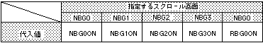

Return to previous page | Return to menu | Go to next page
void
Scroll function
Specify the surface to be mosaicked
void slScrMosaicOn(screen)
Uint16 screen ;
Scroll flag for screen mosaic processing
Specify the scroll plane for the mosaic processing.
By concatenating multiple parameters in the or format, multiple scroll planes can be specified at the same time.
None
For the parameter “screen”, substitute the value in the table below that corresponds to the specified scroll surface.

Note) The values in the above table are defined in “sl_def.h” included with the system.
Reference: HARDWEAR MANUAL vol.2 (VDP2)
slScrMosaicOn